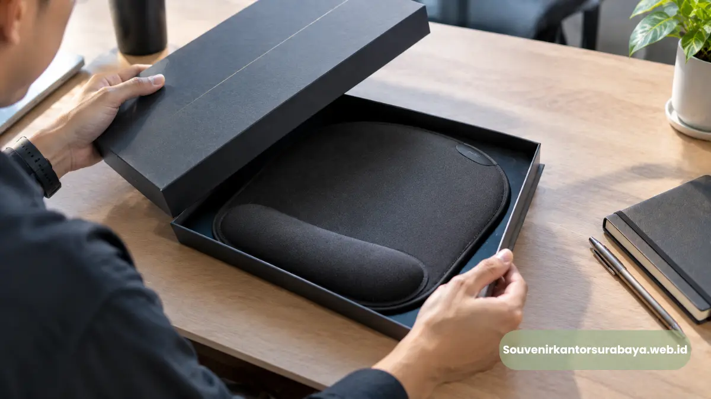
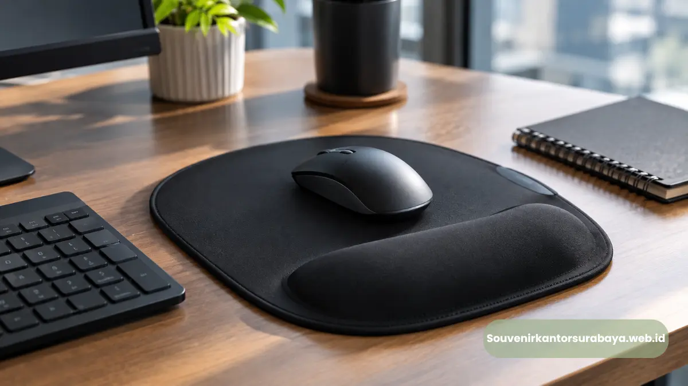

- Mengapa Mouse Pad Ergonomis Menarik untuk Program Corporate Gifting?
- Bagaimana Mouse Pad Custom Logo Mendukung Brand Identity?
- Bagaimana Menentukan Material Mouse Pad untuk Kebutuhan Kantor?
- Varian Mouse Pad Apa yang Dapat Digunakan sebagai Employee Gift?
- Bagaimana Personalisasi Mouse Pad untuk Perusahaan?
- Bagaimana Mouse Pad Mendukung Aktivitas Meja Kerja Modern?
- Bagaimana Kebutuhan Kantor di Yogyakarta Dapat Disiapkan?
- Siapkan Mouse Pad Corporate untuk Kebutuhan Kantor
Mouse pad ergonomis custom logo untuk kantor di Yogyakarta merupakan aksesori meja kerja fungsional yang dapat dipersonalisasi untuk employee gift, merchandise, dan branding perusahaan.
- Mouse pad dapat menjadi merchandise yang relevan untuk lingkungan kerja berbasis komputer.
- Desain ergonomis dapat mencakup wrist support atau fitur yang membantu kenyamanan penggunaan.
- Logo dan warna perusahaan dapat digunakan sebagai elemen brand identity.
- Produk dapat dipakai untuk onboarding, training, anniversary, dan corporate gifting.
- Pemesanan dapat disesuaikan dengan kebutuhan jumlah, desain, material, dan kemasan.
Mengapa Mouse Pad Ergonomis Menarik untuk Program Corporate Gifting?
Mouse pad ergonomis menarik untuk corporate gifting karena memiliki fungsi meja kerja, dapat digunakan berulang, dan menyediakan ruang untuk personalisasi brand.
Bayangkan tim HRD sedang menyiapkan merchandise untuk karyawan baru. Produk yang dipilih perlu terlihat profesional sekaligus memiliki hubungan dengan aktivitas kerja.
Mouse pad memenuhi fungsi tersebut ketika penerimanya bekerja menggunakan komputer. Versi ergonomis dapat memiliki tambahan wrist support atau desain yang mempertimbangkan posisi tangan.
Bagaimana Mouse Pad Custom Logo Mendukung Brand Identity?
Mouse pad custom logo mendukung brand identity dengan membawa logo, warna, atau elemen visual perusahaan ke area kerja penerima secara konsisten.
Logo yang terlalu besar dapat membuat produk terlihat seperti media promosi, sementara desain minimalis dapat menghasilkan kesan lebih profesional.
Untuk souvenir korporat elegan, perusahaan dapat memilih logo kecil dengan warna yang selaras. Untuk merchandise acara, logo dapat dibuat lebih terlihat agar identitas event mudah dikenali.
Baca Juga
Bagaimana Menentukan Material Mouse Pad untuk Kebutuhan Kantor?
Material mouse pad perlu disesuaikan dengan intensitas penggunaan, karakter permukaan meja, kebutuhan kenyamanan, dan metode pencetakan logo perusahaan.
Permukaan kain memiliki karakter berbeda dibanding permukaan sintetis atau material lain. Alas antiselip juga perlu diperhatikan agar produk tetap stabil.
Untuk produk dengan wrist support, bentuk dan ketinggian bantalan perlu diperhatikan. Dukungan telapak atau pergelangan bukan pengganti pengaturan workstation secara keseluruhan.

Varian Mouse Pad Apa yang Dapat Digunakan sebagai Employee Gift?
Varian employee gift dapat berupa mouse pad standar, mouse pad dengan wrist rest, extended mouse pad, atau desain custom dengan warna perusahaan.
Mouse pad standar merupakan pilihan sederhana untuk kebutuhan jumlah besar. Mouse pad dengan wrist support lebih sesuai ketika konsep employee gift mengutamakan aksesori workstation.
Extended mouse pad cocok untuk meja kerja dengan ruang lebih luas. Mouse pad dengan kemasan gift dapat digabungkan dengan notebook atau pulpen untuk membentuk gift set kantor.
Bagaimana Personalisasi Mouse Pad untuk Perusahaan?
Personalisasi dapat dilakukan melalui logo, warna korporat, pola grafis, nama kegiatan, atau elemen desain lain yang tetap mempertahankan fungsi mouse pad.
Untuk perusahaan dengan brand identity kuat, warna korporat dapat dijadikan aksen utama. Logo kemudian ditempatkan di area yang mudah terlihat tanpa mengganggu penggunaan mouse.
Jika mouse pad digunakan sebagai hadiah relasi bisnis, desain minimalis dapat memberikan kesan lebih formal. Untuk employee gift, perusahaan dapat menambahkan elemen yang lebih personal sesuai program internal.
Bagaimana Mouse Pad Mendukung Aktivitas Meja Kerja Modern?
Mouse pad mendukung workstation dengan menyediakan permukaan khusus untuk mouse, sementara desain ergonomis dapat memberikan fitur tambahan sesuai kebutuhan pengguna.
BPS mencatat 99,08 persen penduduk Indonesia yang mengakses internet pada 2024 menggunakan telepon seluler. Angka tersebut menunjukkan dominasi perangkat seluler dalam akses internet dan bukan statistik penggunaan mouse atau komputer di kantor.
Karena itu, angka tersebut tidak dapat dijadikan dasar bahwa semua karyawan membutuhkan mouse pad. Untuk perusahaan dengan pekerjaan administrasi, desain, keuangan, data, customer service, atau aktivitas digital lainnya, aksesori meja kerja dapat menjadi kategori merchandise yang relevan.
Bagaimana Kebutuhan Kantor di Yogyakarta Dapat Disiapkan?
Perusahaan dapat menyiapkan mouse pad custom logo berdasarkan jumlah penerima, tujuan acara, spesifikasi produk, identitas visual, kemasan, dan jadwal distribusi.
Pesan dari Yogyakarta dengan brief yang jelas akan memudahkan pembahasan produk. Informasi yang dapat disiapkan meliputi jumlah, ukuran, jenis desain, logo, warna, dan kebutuhan kemasan.
BPS mencatat 98,80 persen penduduk DI Yogyakarta yang mengakses internet pada 2024 menggunakan telepon seluler, sedangkan 17,67 persen menggunakan laptop dan 4,53 persen menggunakan komputer. Data tersebut merupakan statistik akses internet penduduk dan bukan data penggunaan komputer perusahaan.
Siapkan Mouse Pad Corporate untuk Kebutuhan Kantor
Susun kebutuhan produk berdasarkan penerima dan konsep branding, kemudian konsultasikan spesifikasi mouse pad custom logo untuk kebutuhan kantor dan corporate gifting.
Untuk membandingkan pilihan produk terkait, termasuk aksesori meja kerja dan merchandise corporate, kunjungi SouvenirKantorSurabaya.web.id dan sampaikan kebutuhan mouse pad ergonomis custom logo untuk kantor di Yogyakarta.

Hawa Nadira
Tim penulis CorporateGifts ID berfokus pada strategi souvenir kantor, merchandise korporat, dan inovasi brand untuk klien B2B.
Keahlian: Branding perusahaan, produksi souvenir, paket event, desain materi promosi.
Artikel Terkait

Souvenir Kantor Corporate untuk Perusahaan Malang
Souvenir kantor corporate untuk perusahaan Malang dengan pilihan custom logo, gift set, dan employee gift untuk kebutuhan branding.
Baca Selengkapnya
Mouse Pad Ergonomis Custom Logo Semarang
Mouse pad ergonomis custom logo untuk kantor di Semarang sebagai aksesori meja kerja, employee gift, dan media branding perusahaan.
Baca Selengkapnya
Mouse Pad Ergonomis Custom Logo Surabaya
Pesan mouse pad ergonomis custom logo untuk kantor di Surabaya. Cocok untuk employee gift, branding perusahaan, dan souvenir corporate.
Baca Selengkapnya